This guide will walk you through creating an EMDK For Android application that will use some new Mx features introduced in EMDK for Android API to perform device configurations. Mx represents a suite of Enterprise Features on top of standard, commercially available Android Open Source Project. So this tutorial will focus on the ability to configure Enterprise Reset option in Settings UI on your Symbol device using Settings Manager feature of Mx.
So now we will create a tutorial and disable the ability to invoke Enterprise Reset in Settings UI of your Symbol Android device using Mx Settings Manager feature. A typical use case for this could be to prevent user by accidentally pressing "Enterprise Reset" option.
For more information about setting up the EMDK please see the EMDK Overview.
Note: Provide "MxSettingsManagerTutorial" as the project name for this tutorial.
If you are using Android Studio, click here.
If you are using Eclipse with ADT, click here.
If you are using Android Studio, you have already completed this step while creating the project by selecting EMDK 3.1 (API 16) (Symbol Technologies, Inc.) (API 16) or EMDK 3.1 (API 19) (Symbol Technologies, Inc.) (API 19) as the minimum SDK.
If you are using Eclipse with ADT, click here for Enabling the EMDK tutorial as it would again be a common step for all of your projects that are using EMDK for Android API.
Click here to see how to add a specific feature to the Profile Manager.
Provide "SettingsManagerProfile" as the Profile Name for this tutorial.
Note: You can provide any Profile Name but make sure to access it with the similar name in the Android code.
Now, you can see all these MX features on the left hand side of the Profile Editor window. Select the "Settings Manager" feature from the list and click "Right Arrow".
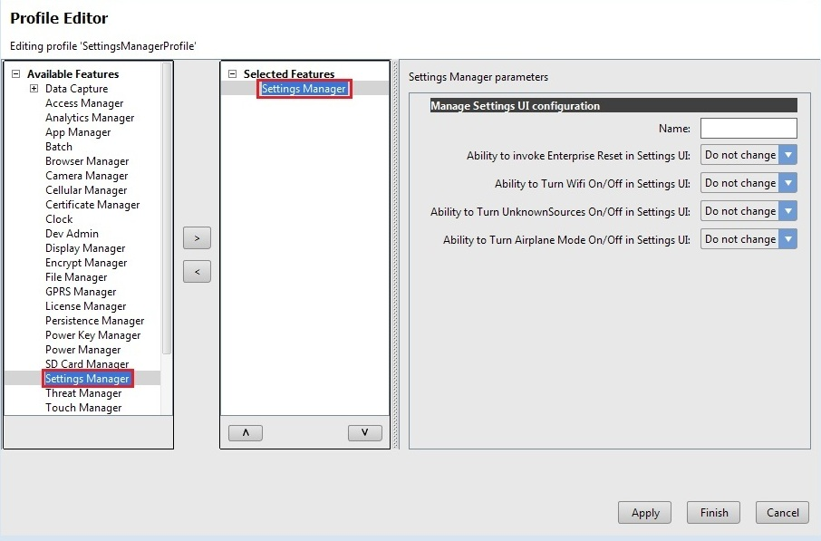
Provide some name in the "Name" field (Ex. MySettingsManager). The "Name" field is used to identify each feature, which is required when editing features programmatically. You can also keep the "Name" field empty.
Since we want to disable the Enterprise Reset option in Settings UI, select "Disable" in "Ability to invoke Enterprise Reset in Settings UI" drop-down. You can see that Settings Manager also offers some additional features such as turning ON/OFF Wi-Fi, UnknownSources and Airplane Mode on Settings UI.
Note: You can Enable, Disable or keep the existing settings based on your selection from the drop-down.
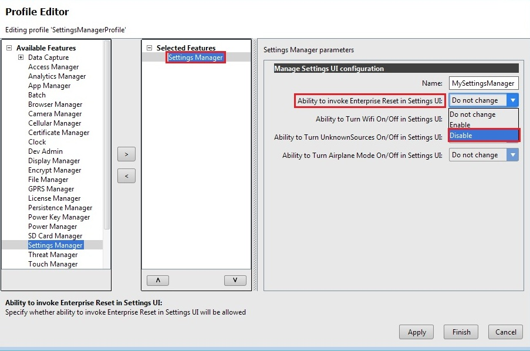
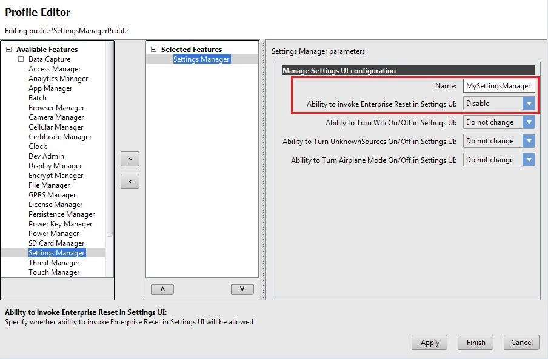
Click Apply to apply the settings we provided
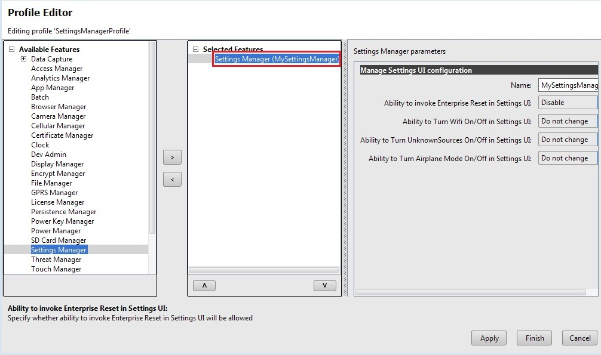
Click Finish and your Settings Manager profile for disabling Enterprise Reset option on Settings UI is created.
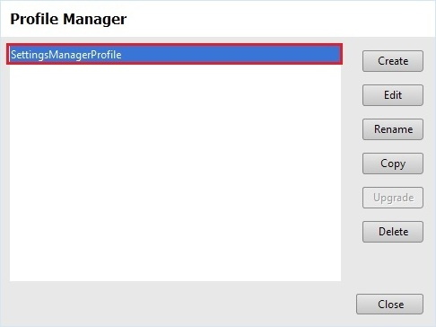
Click "Close".
Note:
Now the "EMDKConfig.xml" is created under "\assets" folder. This file will contain a definition of all of your profiles that you create.
You can inspect the "EMDKConfig.xml" created under "\assets" folder to see it is reflecting the changes made to the parameters via EMDK Profile Manager GUI earlier. However, it is advised that this file not be manually updated and only be controlled via the Profile Manager.
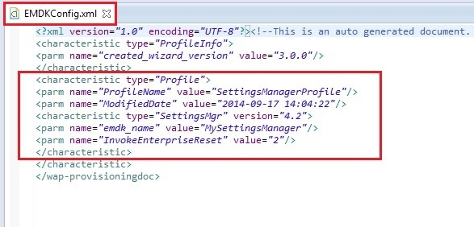
Modify the Application's Manifest.xml to use the EMDK library and to set permission for the EMDK.
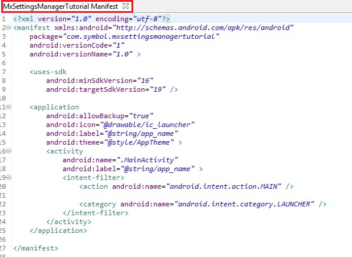
You must first enable permissions for 'com.symbol.emdk.permission.EMDK':
<uses-permission android:name="com.symbol.emdk.permission.EMDK"/>
Then you must enable the library:
<uses-library android:name="com.symbol.emdk"/>
When done, your manifest.xml should look like:
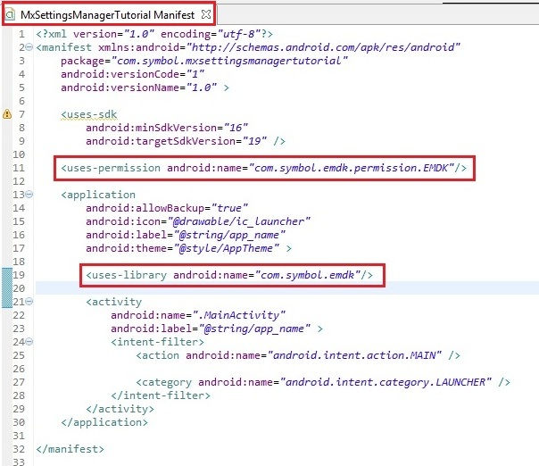
Now we will start to add some code.
First you must add references to the libraries:
import com.symbol.emdk.*;
import com.symbol.emdk.EMDKManager.EMDKListener;
import android.widget.Toast;
Then you must extend the activity to implement EMDKListener. Use Eclipse's Content Assist to implement the unimplemented functions of onOpened and onClosed.
public class MainActivity extends Activity implements EMDKListener {
.. .. .. .. .. .. ...
@Override
public void onClosed() {
// TODO Auto-generated method stub
}
@Override
public void onOpened(EMDKManager emdkManager) {
// TODO Auto-generated method stub
}
}
We will now create some global variables to hold the profile name as well as instance objects of EMDKManager and ProfileManager with a status variable while applying the profile. Some of the variables are used to hold the name, type and description in case of any errors. These variables would be used throughout the code.
Note: Verify the Profile name in the code with the one created in the Profile Manager. They both should be identical.
// Assign the profile name used in EMDKConfig.xml
private String profileName = "SettingsManagerProfile";
// Declare a variable to store ProfileManager object
private ProfileManager profileManager = null;
// Declare a variable to store EMDKManager object
private EMDKManager emdkManager = null;
// Contains the parm-error name (sub-feature that has error)
private String errorName = "";
// Contains the characteristic-error type (Root feature that has error)
private String errorType = "";
// contains the error description for parm or characteristic error.
private String errorDescription = "";
// contains status of the profile operation
private String status = "";
In the onCreate method, we call getEMDKManager so that the EMDK can be initialized and checked to see if it is ready.
//The EMDKManager object will be created and returned in the callback.
EMDKResults results = EMDKManager.getEMDKManager(getApplicationContext(), this);
//Check the return status of getEMDKManager
if (results.statusCode == EMDKResults.STATUS_CODE.SUCCESS) {
// EMDKManager object creation success
} else {
// EMDKManager object creation failed
}
So far your code should look like:
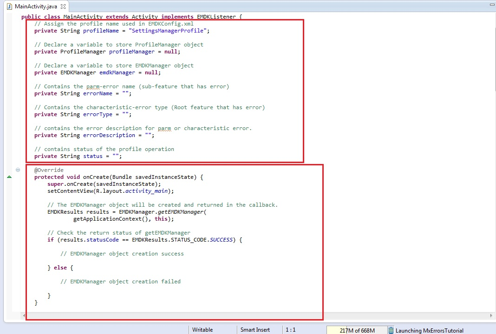
Now we need to use the onOpened method to get a reference to the EMDKManager. The EMDKListener interface will trigger this event when the EMDK is ready to be used. The EMDKListener interface must be implemented in order to get a reference to the EMDKManager APIs. This event will pass the EMDKManager instance and we assign it to the global variable emdkManager that we created in the previous steps. We then use that instance object to get an instance of ProfileManager and assign it to the global variable profileManager. This is how we will interface with the APIs in the rest of the code:
Note: Rename the argument of
onOpenedmethod fromarg0toemdkManager
// This callback will be issued when the EMDK is ready to use.
this.emdkManager = emdkManager;
// Get the ProfileManager object to process the profiles
profileManager = (ProfileManager) emdkManager
.getInstance(EMDKManager.FEATURE_TYPE.PROFILE);
Now that we have a reference to ProfleManager, we use it to install and activate the profile we built earlier using the processProfile method. We could have also performed this action at a different time, say when someone pressed a button, but we chose to do it as soon as the EMDK was ready:
if (profileManager != null) {
String[] modifyData = new String[1];
// Call processPrfoile with profile name and SET flag to create the profile. The modifyData can be null.
EMDKResults results = profileManager.processProfile(profileName,
ProfileManager.PROFILE_FLAG.SET, modifyData);
if (results.statusCode == EMDKResults.STATUS_CODE.CHECK_XML) {
} else {
// Show dialog of Failure
AlertDialog.Builder builder = new AlertDialog.Builder(this);
builder.setTitle("Failure");
builder.setMessage("Failed to apply profile...")
.setPositiveButton("OK",
new DialogInterface.OnClickListener() {
public void onClick (DialogInterface dialog,
int id) {
}
});
AlertDialog alert = builder.create();
alert.show();
}
}
This processProfile method returns the result of applying a particular profile that we set using EMDK Profile Wizard in EMDKResults reference. If the profile is successfully processed, it retuns the status as CHECK_XML and then we go on and parse the response to get further details whether the profile was applied successfully or not. Otherwise we display a Failure message in a dialog.
Note: 1. There is a difference between processing a profile successfully and applying a profile successfully.
Note: 2. If the status is other than
CHECK_XML, we are simply displaying a failure message. You can actually go ahead and check different types of status and display the appropriate message accordingly, which is not in the scope of this sample tutorial.
In case of CHECK_XML status, We retrieve XML response string from the result using getStatusString method.
// Get XML response as a String
String statusXMLResponse = results.getStatusString();
Further, we would parse this XML response string using XML Pull Parser in order to get the status and error parameters if any. XML Pull Parser is an interface that defines parsing functionality provided in XMLPULL V1 API (visit this website to learn more about API and its implementations). In the parsing we would be looking for specific status tags (Error Name, Error Type and Error Description) in case of any errors and if found, we would get those values in the respective global variables that we have declared in previous step.
try {
// Create instance of XML Pull Parser to parse the response
XmlPullParser parser = Xml.newPullParser();
// Provide the string response to the String Reader that reads
// for the parser
parser.setInput(new StringReader(statusXMLResponse));
// Call method to parse the response
parseXML(parser);
} catch (XmlPullParserException e) {
e.printStackTrace();
}
Note: Here we have called the method
parseXMLto parse XML response string. We will declare the method in the next step.
Once the response is parsed, we would display the result of applying this profile in a dialog by calling displayResults method, which we would declare in coming steps.
// Method call to display results in a dialog
displayResults();
Your complete onOpened method should now look like:
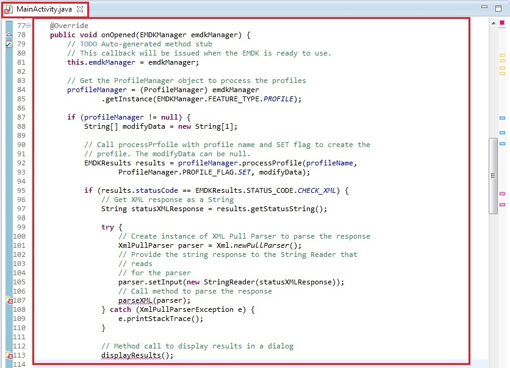
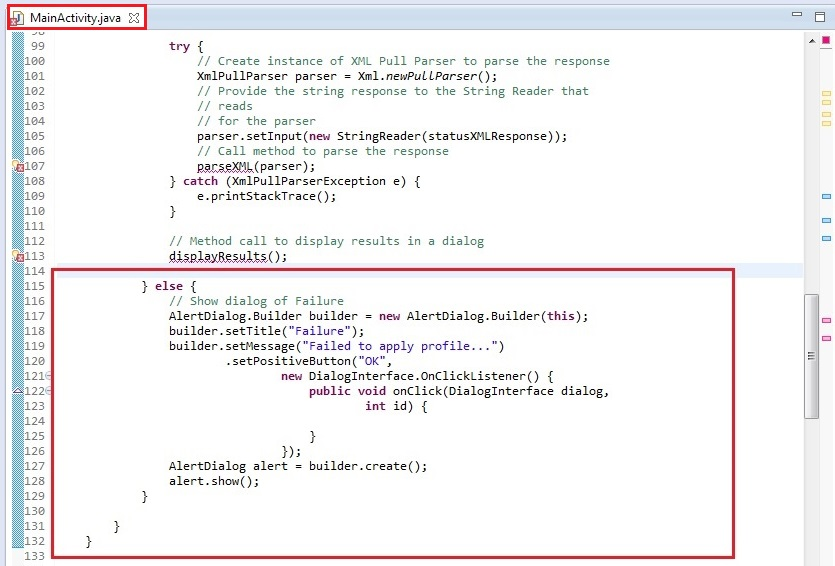
You will see few errors as we have not declared the respective methods to parse the response and display result. Lets do it one by one. In this step, we will create a method parseXML that uses XML Pull Parser to parse the XML string response and set the status and error parameters if any.
In the response, we are supposed to capture name and desc for parm-error tag, type and desc for characteristic-error tag in case of any errors.
// Method to parse the XML response using XML Pull Parser
public void parseXML(XmlPullParser myParser) {
int event;
try {
event = myParser.getEventType();
while (event != XmlPullParser.END_DOCUMENT) {
String name = myParser.getName();
switch (event) {
case XmlPullParser.START_TAG:
// Get Status, error name and description in case of
// parm-error
if (name.equals("parm-error")) {
status = "Failure";
errorName = myParser.getAttributeValue(null, "name");
errorDescription = myParser.getAttributeValue(null,
"desc");
// Get Status, error type and description in case of
// parm-error
} else if (name.equals("characteristic-error")) {
status = "Failure";
errorType = myParser.getAttributeValue(null, "type");
errorDescription = myParser.getAttributeValue(null,
"desc");
}
break;
case XmlPullParser.END_TAG:
break;
}
event = myParser.next();
}
} catch (Exception e) {
e.printStackTrace();
}
}
Your complete parseXML method should now look like:
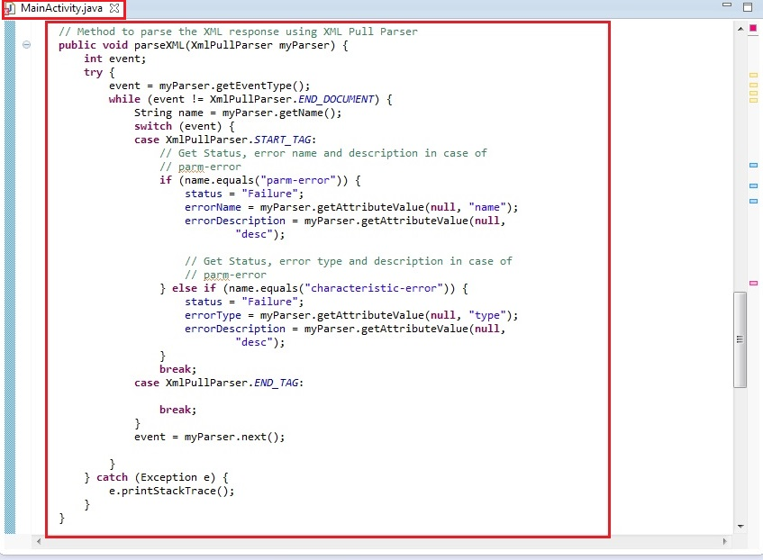
You will still see one error as we need to declare displayResults method to display the result of profile operation in a dialog. Before displaying the results, we should form the content of the result to be shown first, specifically in case of errors. This could be done by creating buildFailureMessage method.
In this method, the error message in case of error is formed using following way:
parm-error.characteristic-error.parm-error and characteristic-error.The buildFailureMessage method would have following code to match the above mentioned criteria.
// Method to build failure message that contains name, type and
// description of respective error (parm, characteristic or both)
public String buildFailureMessage() {
String failureMessage = "";
if (!TextUtils.isEmpty(errorName) && !TextUtils.isEmpty(errorType))
failureMessage = errorName + " :" + "\n" + errorType + " :" + "\n"
+ errorDescription;
else if (!TextUtils.isEmpty(errorName))
failureMessage = errorName + " :" + "\n" + errorDescription;
else
failureMessage = errorType + " :" + "\n" + errorDescription;
return failureMessage;
}
buildFailureMessage method should look like:
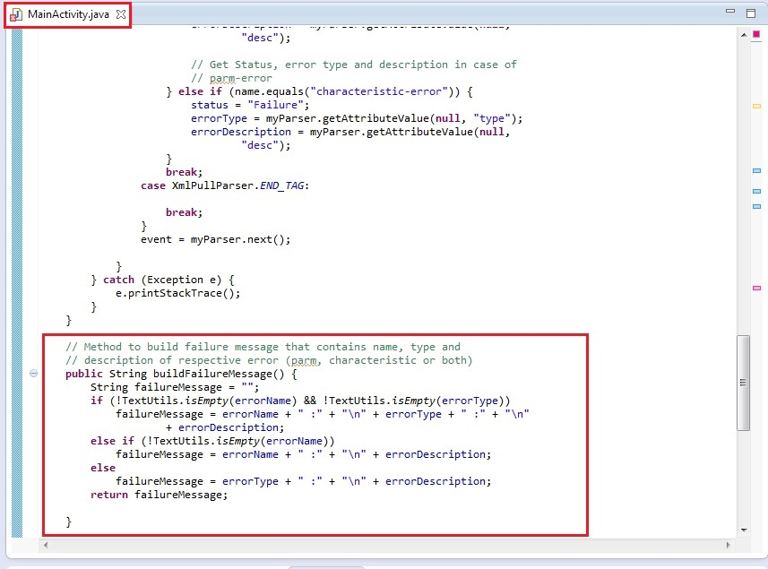
In this step, we will add displayResults method to display the result of profile operation in a dialog. The dialog would display status as Success or Failure with corresponding message based on the response of profile operation.
// Method to display results (Status, Error Name, Error Type, Error
// Description) in a
// dialog
public void displayResults() {
// Alert Dialog to display the status of the Profile creation
// operation of MX features
AlertDialog.Builder alertDialogBuilder = new AlertDialog.Builder(
MainActivity.this);
if (TextUtils.isEmpty(errorDescription)) {
alertDialogBuilder.setTitle("Success");
alertDialogBuilder.setMessage("Profile Successfully Applied...");
} else {
// set title
alertDialogBuilder.setTitle(status);
// call buildFailureMessage() method to set failure message in
// dialog
alertDialogBuilder.setMessage(buildFailureMessage());
}
alertDialogBuilder.setCancelable(false).setPositiveButton("OK",
new DialogInterface.OnClickListener() {
public void onClick(DialogInterface dialog, int id) {
}
});
// create alert dialog
AlertDialog alertDialog = alertDialogBuilder.create();
// show it
alertDialog.show();
}
The method displayResults should look like:
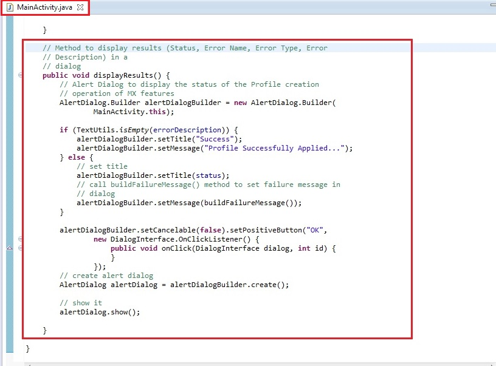
You can see that all the errors are gone.
Now let's override the "onDestroy" method so we can release the EMDKManager resources:
@Override
protected void onDestroy() {
// TODO Auto-generated method stub
super.onDestroy();
//Clean up the objects created by EMDK manager
emdkManager.release();
}
Your onDestroy method should now look like this:
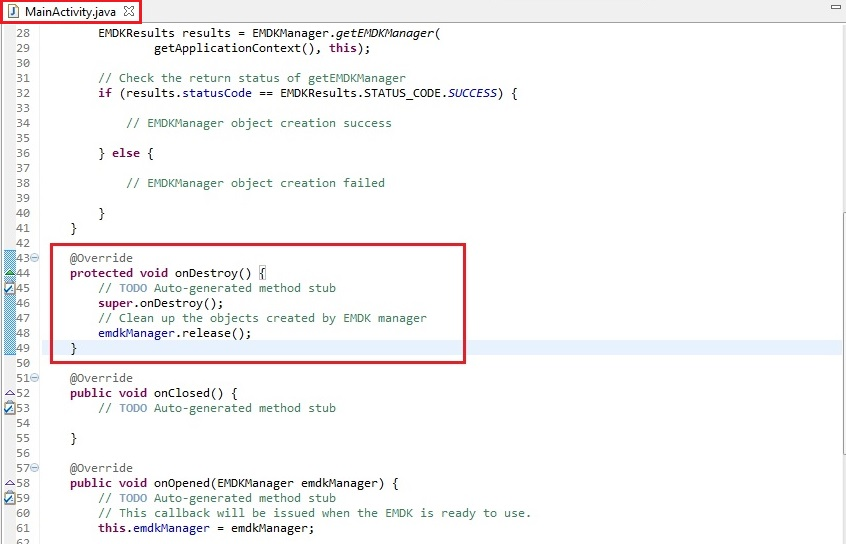
That's it!!! We are done with all the coding and configuration part that will let us disable Enterprise Reset in Settings UI on our Symbol Android device. Now let us run the application.
Connect the device (having the latest EMDK runtime) to USB port.
Note:
Make sure the device is in USB debug.
Now, Run the application.
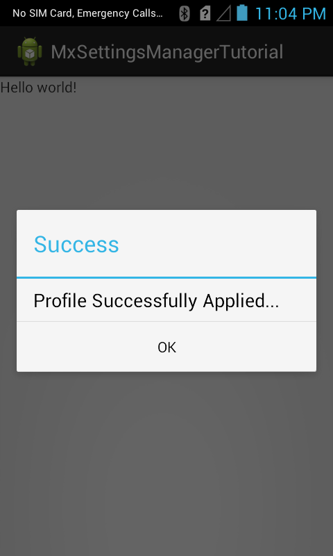
You can see an Alert Dialog with a success message, which indicates that the app has successfully disabled the Enterprise Reset option in Settings UI.
Note: In case of any errors, you will see a Failure status with respective error message in that dialog.
We will now verify this by going into the device's Settings.
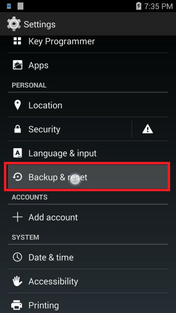
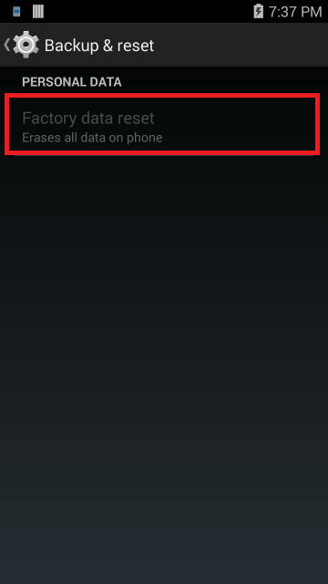
You can see that the Enterprise Reset option is disabled from settings UI.
This is how Settings Manager is used to configure Enterprise Reset option in Settings UI of your Symbol device using Profile Wizard.
It is required to do the following changes in the application's AndroidManifest.xml:
Note:
- Include the permission for EMDK:
<uses-permission android:name="com.symbol.emdk.permission.EMDK"/>
Note:
- Use the EMDK library:
<uses-library android:name="com.symbol.emdk"/>
Installing the EMDK for Android application without deploying the EMDK runtime on the Symbol device will fail because of missing shared library on the device.
Use the DataWedge v1.7.12 or higher version to test the ProfileManager.processProfile() for DataWedge profiles.
Now that you have learned how to configure Settings UI with Enterprise Reset option using Settings Manager on your Symbol Android devices through applications, let us try to understand and implement some of the other new Mx features introduced in V 3.0. So in the next tutorial, we will concentrate on the "USB Manager" Mx feature and try to explore this feature by creating a tutorial.
The project source to this tutorial can be downloaded (Internet Connection Required)